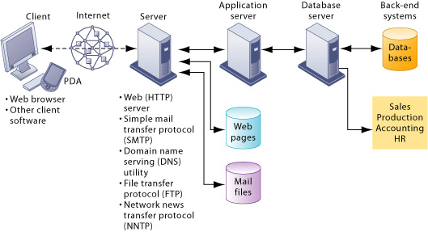

🖥️ 오리엔테이션: 웹의 구조 이해
📌 1. 웹이란 무엇인가?
- 정의: 인터넷을 통해 정보를 주고받는 서비스
- 구성요소: 클라이언트(Client), 서버(Server), 인터넷(Network)
-
- 
🌐 2. 클라이언트-서버 구조란?
- 클라이언트(Client): 서비스를 요청하는 사용자 측 (예: 웹 브라우저)
- 서버(Server): 요청을 처리하고 응답하는 컴퓨터
- 통신 방식: 요청(Request) → 응답(Response)
🧭 3. 웹 브라우저의 역할
- 사용자의 인터페이스: 웹 페이지를 시각적으로 표시
- HTTP 요청 전송: 주소 입력 → 서버에 요청 전송
- 응답 처리: HTML, CSS, JS 파일을 받아서 웹페이지로 렌더링
📨 4. 요청과 응답 (HTTP 통신)
- 요청(Request): 클라이언트 → 서버 (GET, POST 등)
- 응답(Response): 서버 → 클라이언트 (상태코드 + 콘텐츠)
🗂️ 5. 웹의 기본 구성 요소
- HTML: 웹페이지의 구조
- CSS: 디자인과 스타일
- JavaScript: 동적인 기능 구현
⚙️ 6. 정적 웹 vs 동적 웹
- 정적 웹: 서버에서 고정된 HTML 파일 제공
- 동적 웹: 서버에서 데이터에 따라 HTML을 생성 (예: 로그인, 검색)
🌐 7. 전체 흐름 요약
- 사용자가 브라우저에 주소 입력
- 브라우저가 서버에 HTTP 요청
- 서버가 응답 데이터를 전송
- 브라우저가 응답을 해석해 웹페이지 표시